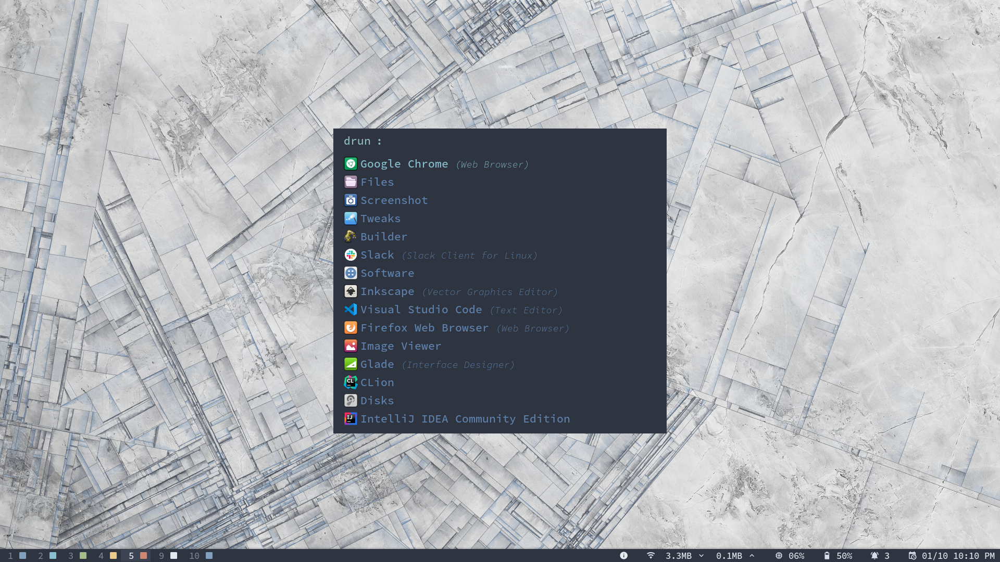
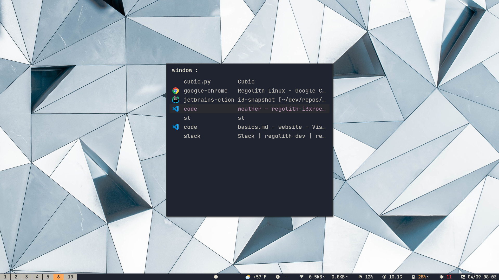

Basiswissen
Während wir in anderen Bereichen der Dokumentation alles ausführlicher behandeln werden, geht diese Seite auf die Grundlagen ein.
Die Super Taste
Die meisten Tastaturkürzel, die Sie mit Regolith verwenden werden, beginnen mit der Taste Super. Auf dieser Taste steht normalerweise “WIN” oder sie trägt ein MS Windows-Logo. Auf einem Mac ist es die Taste Command ⌘. In Zukunft wird diese Taste einfach als Super bezeichnet, aber denken Sie daran, dass Sie die Belegung der physischen Taste Super in Ihrer Konfiguration ändern können, wenn Sie dies wünschen.
Starter
Regolith stellt mehrere sogenannte Starter zur Verfügung, mit denen sie einfach mit Ihrem System interagieren können. Jeder dieser Starter hat ein einheitliches Erscheinungsbild, bietet aber Zugang zu einer bestimmten Funktion. Standard-Starter sind zum Starten von Anwendungen Super Leertaste, von Kommandos mit Super Umschalt Leertaste, zur Anzeige von Benachrichtigungen Super n, von allen offenen Fenstern Super Strg Leertaste, und von Dateien Super Alt Leertaste.
Starten einer Anwendung
Nach dem Einloggen befinden Sie sich auf einem leeren Bildschirm mit der Leiste unten und einigen Tastenkombinationen rechts. Um eine Anwendung zu starten, drücken Sie Super Leertaste und es wird ein Menü mit allen auf dem System installierten Anwendungen angezeigt. Wenn Sie mit der Eingabe des Namens der Anwendung beginnen, die Sie starten möchten, wird die Liste nach nur übereinstimmenden Namen gefiltert. Sie können auch mit den Pfeiltasten durch die Liste blättern.
Zu einem Fenster navigieren
Um sich zu einer laufenden Anwendung zu wechseln, kann die Tastenkombination Super Strg Leertaste verwendet werden, um einen Dialog aller laufenden Fenster anzuzeigen. Wählen Sie einfach das gewünschte Fenster aus und das System wechselt in den Arbeitsbereich des Fensters, der das Fenster enthält, und setzt den Fokus.
Suchen und Starten einer Datei
Das Durchsuchen Ihres lokalen Computers nach einer bestimmten Datei kann auf verschiedene Weise erreicht werden. Regolith bietet einen Dateisuchdialog über Super Alt Leertaste zum schnellen Suchen und optionalen Laden einer Datei mit ihrer Standardanwendung. Wenn der Dateipfad die Breite des Dialogfelds überschreitet, schaltet Alt die Textausrichtung um. Wenn Sie bei einer Auswahl die Eingabetaste drücken, wird die Datei mit dem Befehl xdg-open geöffnet.
Terminal
Das Terminal ist eine spezielle Anwendung, die über eine eigene Tastenbindung verfügt, Super Eingabetaste.
Browser
Der bevorzugte Browser ist ebenfalls speziell und kann mit Super Umschalt Eingabetaste gestartet werden.
Beenden einer Bewerbung
Super Umschalt q wird die fokussierte Anwendung beendet. Bei fehlerhaftem Verhalten von Anwendungen erzwingt Super Alt q das Beenden der fokussierten Anwendung, aber beachten Sie, dass nicht gespeicherte Daten wahrscheinlich verloren gehen.
Wechseln von Arbeitsbereichen
Die Verwendung von Arbeitsbereichen ist die wichtigste Möglichkeit um die Belegung des Bildschirms zu verwalten. Ein Arbeitsbereich ist im Wesentlichen eine Gruppe von keiner oder mehr Anwendungen, die alle Fenster auf demselben physischen Bildschirm darstellen. Benutzer können Arbeitsbereiche wechseln, um mehr Platz zu “gewinnen”, den Anwendungen belegen können. Fenster können zwischen Arbeitsbereichen verschoben werden. Arbeitsbereiche können an die physischen Bildschirm gebunden oder bei Bedarf auf andere Bildschirme verschoben werden. Um die Arbeitsbereiche zu wechseln, halten Sie die Taste Super gedrückt und drücken Sie eine der Zifferntasten. Dadurch wird zu diesem Arbeitsbereich navigiert. Wenn in einem bestimmten Arbeitsbereich Fenster vorhanden sind, werden diese in der Leiste als aktiv angezeigt. Durch Bezugnahme auf die Leiste kann der Benutzer also wissen, in welchen Arbeitsbereichen aktive Anwendungen aktiv sind.
Arbeitsbereiche können auch über Super Tab und Super Umschalt Tab gewechselt werden.
Konfigurieren des Systems
Die Anwendung “Einstellungen” (auch bekannt als “GNOME-Kontrollzentrum”) ist die Anlaufstelle für allgemeine Konfigurationsaufgaben, wie das Ändern des Desktophintergrunds, die Konfiguration von WLAN und Bluetooth, die Konfiguration von Anwendungszuordnungen und das Einrichten von Benutzer*innen. Diese Anwendung kann über das Super c Tastaturkürzel oder vom Starter aus über die Einstellungen Anwendung gestartet werden.
Weiterführendes
Weitere Tastaturkürzel sind unter Remontoire, der Abkürzungsanwendung, aufgeführt. Diese Anwendung wird automatisch bei der ersten Sitzung geladen, aber nicht bei aufeinanderfolgenden Anmeldungen. Das Fenster kann jederzeit umgeschaltet werden, indem Sie auf das eingekreiste Symbol i in der Leiste klicken oder Super Umschalt ? drücken.
Feedback
Was this page helpful?
Glad to hear it! Please tell us how we can improve.
Sorry to hear that. Please tell us how we can improve.